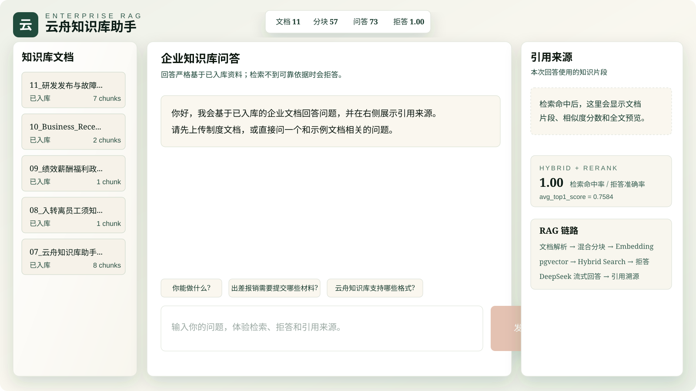

<!DOCTYPE html>
<html lang="en">
<head>
  <meta charset="UTF-8" />
  <meta name="viewport" content="width=device-width, initial-scale=1.0" />
  <title>关海龙的个人主页</title>
  <meta name="description" content="关海龙的个人 AI 工程作品集，展示 Enterprise RAG Assistant、LLM 应用开发、Agent 工作流、Next.js/FastAPI/PostgreSQL/pgvector 与云服务器部署实践。" />
  <meta name="keywords" content="AI Agent, RAG, LLM 应用开发, Next.js, FastAPI, PostgreSQL, pgvector, DeepSeek, DashScope, 个人作品集" />
  <meta name="author" content="Harry Guan" />
  <meta name="robots" content="index, follow" />
  <meta name="referrer" content="strict-origin-when-cross-origin" />
  <link rel="canonical" href="https://harryguan.online/" />
  <meta property="og:type" content="website" />
  <meta property="og:site_name" content="关海龙的 AI 工程作品集" />
  <meta property="og:title" content="关海龙 | AI Agent 与 RAG 应用工程作品集" />
  <meta property="og:description" content="聚焦企业知识库 RAG、LLM 应用工程、Agent 工作流和云端部署的个人作品集。" />
  <meta property="og:url" content="https://harryguan.online/" />
  <meta property="og:image" content="https://harryguan.online/Images/hobbies/hobbies-background.webp" />
  <meta name="twitter:card" content="summary_large_image" />
  <meta name="twitter:title" content="关海龙 | AI Agent 与 RAG 应用工程作品集" />
  <meta name="twitter:description" content="聚焦企业知识库 RAG、LLM 应用工程、Agent 工作流和云端部署的个人作品集。" />
  <meta name="twitter:image" content="https://harryguan.online/Images/hobbies/hobbies-background.webp" />
  <link rel="icon" href="/favicon.svg" type="image/svg+xml" />
  <script type="application/ld+json">
    {
      "@context": "https://schema.org",
      "@type": "ProfilePage",
      "url": "https://harryguan.online/",
      "name": "关海龙的 AI 工程作品集",
      "inLanguage": ["zh-CN", "en"],
      "mainEntity": {
        "@type": "Person",
        "name": "Harry Guan",
        "jobTitle": "AI Application Developer",
        "description": "AI Agent 与 RAG 应用开发实践者，关注 LLM 应用工程、知识库检索、评测闭环和云端部署。",
        "knowsAbout": [
          "AI Agent",
          "LLM application development",
          "RAG",
          "FastAPI",
          "PostgreSQL pgvector",
          "AI product design"
        ],
        "url": "https://harryguan.online/",
        "sameAs": [
          "https://space.bilibili.com/22301865"
        ]
      }
    }
  </script>
  <link rel="preconnect" href="https://fonts.googleapis.com" />
  <link rel="preconnect" href="https://fonts.gstatic.com" crossorigin />
  <link href="https://fonts.googleapis.com/css2?family=Instrument+Serif:ital@0;1&family=Barlow:wght@300;400;500;600&family=Noto+Serif+SC:wght@400;500;600;700&display=swap" rel="stylesheet" />
  <script src="https://cdn.tailwindcss.com"></script>
  <script>
    tailwind.config = {
      theme: {
        extend: {
          fontFamily: {
            heading: ["Instrument Serif", "serif"],
            body: ["Barlow", "sans-serif"],
          },
          borderRadius: {
            DEFAULT: "9999px",
          },
        },
      },
    };
  </script>
  <style>
    html {
      scroll-behavior: smooth;
      background: #000;
    }

    body {
      margin: 0;
      min-height: 100vh;
      background: #000;
      overflow-x: hidden;
    }

    * {
      box-sizing: border-box;
    }

    .liquid-glass {
      background: rgba(255,255,255,0.01);
      background-blend-mode: luminosity;
      backdrop-filter: blur(4px);
      -webkit-backdrop-filter: blur(4px);
      border: none;
      box-shadow: inset 0 1px 1px rgba(255,255,255,0.1);
      position: relative;
      overflow: hidden;
    }

    .liquid-glass::before {
      content: "";
      position: absolute; inset: 0;
      border-radius: inherit;
      padding: 1.4px;
      background: linear-gradient(180deg,
        rgba(255,255,255,0.45) 0%,
        rgba(255,255,255,0.15) 20%,
        rgba(255,255,255,0) 40%,
        rgba(255,255,255,0) 60%,
        rgba(255,255,255,0.15) 80%,
        rgba(255,255,255,0.45) 100%);
      -webkit-mask: linear-gradient(#fff 0 0) content-box, linear-gradient(#fff 0 0);
      -webkit-mask-composite: xor;
      mask-composite: exclude;
      pointer-events: none;
    }

    .liquid-glass-strong {
      background: rgba(255,255,255,0.01);
      background-blend-mode: luminosity;
      backdrop-filter: blur(50px);
      -webkit-backdrop-filter: blur(50px);
      border: none;
      box-shadow: 4px 4px 4px rgba(0,0,0,0.05), inset 0 1px 1px rgba(255,255,255,0.15);
      position: relative;
      overflow: hidden;
    }

    .liquid-glass-strong::before {
      content: "";
      position: absolute; inset: 0;
      border-radius: inherit;
      padding: 1.4px;
      background: linear-gradient(180deg,
        rgba(255,255,255,0.5) 0%,
        rgba(255,255,255,0.2) 20%,
        rgba(255,255,255,0) 40%,
        rgba(255,255,255,0) 60%,
        rgba(255,255,255,0.2) 80%,
        rgba(255,255,255,0.5) 100%);
      -webkit-mask: linear-gradient(#fff 0 0) content-box, linear-gradient(#fff 0 0);
      -webkit-mask-composite: xor;
      mask-composite: exclude;
      pointer-events: none;
    }

    .video-surface {
      opacity: 0;
      will-change: opacity;
    }

    .interactive-card {
      transform-origin: center;
      transition: transform 260ms cubic-bezier(0.22, 1, 0.36, 1), filter 260ms ease, box-shadow 260ms ease;
      will-change: transform;
    }

    .interactive-card:hover {
      transform: translateY(-8px) scale(1.018) !important;
      filter: brightness(1.06);
      box-shadow: 0 18px 42px rgba(0,0,0,0.22), inset 0 1px 1px rgba(255,255,255,0.14);
    }

    .interactive-card:active {
      transform: translateY(-4px) scale(1.01) !important;
    }

    @media (prefers-reduced-motion: reduce) {
      .interactive-card {
        transition: none;
      }

      .interactive-card:hover,
      .interactive-card:active {
        transform: none !important;
      }
    }

    @media (max-width: 767px) {
      .hero-title {
        letter-spacing: -2px !important;
      }
    }

    .mobile-nav-panel {
      max-height: calc(100vh - 6rem);
      overflow-y: auto;
    }

    .lang-zh,
    .lang-zh .font-body,
    .lang-zh .font-heading {
      font-family: "Noto Serif SC", "Songti SC", "SimSun", serif !important;
      font-style: normal;
      letter-spacing: 0 !important;
    }

    .lang-zh .font-heading,
    .lang-zh .hero-title {
      font-weight: 500;
    }

    .lang-zh .brand-mark {
      font-family: "Instrument Serif", serif !important;
      font-style: italic;
    }
  </style>
</head>
<body>
  <div id="root"></div>

  <script src="https://unpkg.com/react@18.3.1/umd/react.development.js" integrity="sha384-hD6/rw4ppMLGNu3tX5cjIb+uRZ7UkRJ6BPkLpg4hAu/6onKUg4lLsHAs9EBPT82L" crossorigin="anonymous"></script>
  <script src="https://unpkg.com/react-dom@18.3.1/umd/react-dom.development.js" integrity="sha384-u6aeetuaXnQ38mYT8rp6sbXaQe3NL9t+IBXmnYxwkUI2Hw4bsp2Wvmx4yRQF1uAm" crossorigin="anonymous"></script>
  <script src="https://unpkg.com/@babel/standalone@7.29.0/babel.min.js" integrity="sha384-m08KidiNqLdpJqLq95G/LEi8Qvjl/xUYll3QILypMoQ65QorJ9Lvtp2RXYGBFj1y" crossorigin="anonymous"></script>
  <script src="https://unpkg.com/framer-motion@11.11.17/dist/framer-motion.js"></script>
  <script src="https://cdn.jsdelivr.net/npm/hls.js@1.5.20/dist/hls.min.js"></script>
  <script>window.Motion = window.FramerMotion || window.Motion;</script>

  <script type="text/babel">
    const { useEffect, useRef, useState } = React;
    const { motion, AnimatePresence } = window.Motion;

    const originalConsoleError = console.error;
    console.error = (...args) => {
      const first = String(args[0] || "");
      if (first.includes("Each child in a list should have a unique")) return;
      originalConsoleError(...args);
    };

    function ArrowUpRight({ className = "h-6 w-6" }) {
      return (
        <svg className={className} viewBox="0 0 24 24" fill="none" stroke="currentColor" strokeWidth="2" strokeLinecap="round" strokeLinejoin="round" aria-hidden="true">
          <path d="M7 17L17 7" />
          <path d="M7 7h10v10" />
        </svg>
      );
    }
    window.ArrowUpRight = ArrowUpRight;

    function ChevronLeft({ className = "h-5 w-5" }) {
      return (
        <svg className={className} viewBox="0 0 24 24" fill="none" stroke="currentColor" strokeWidth="2" strokeLinecap="round" strokeLinejoin="round" aria-hidden="true">
          <path d="m15 18-6-6 6-6" />
        </svg>
      );
    }
    window.ChevronLeft = ChevronLeft;

    function ChevronRight({ className = "h-5 w-5" }) {
      return (
        <svg className={className} viewBox="0 0 24 24" fill="none" stroke="currentColor" strokeWidth="2" strokeLinecap="round" strokeLinejoin="round" aria-hidden="true">
          <path d="m9 18 6-6-6-6" />
        </svg>
      );
    }
    window.ChevronRight = ChevronRight;

    function PlusIcon({ className = "h-5 w-5" }) {
      return (
        <svg className={className} viewBox="0 0 24 24" fill="none" stroke="currentColor" strokeWidth="2" strokeLinecap="round" strokeLinejoin="round" aria-hidden="true">
          <path d="M12 5v14" />
          <path d="M5 12h14" />
        </svg>
      );
    }
    window.PlusIcon = PlusIcon;

    function MenuIcon({ className = "h-5 w-5" }) {
      return (
        <svg className={className} viewBox="0 0 24 24" fill="none" stroke="currentColor" strokeWidth="2" strokeLinecap="round" strokeLinejoin="round" aria-hidden="true">
          <path d="M4 7h16" />
          <path d="M4 12h16" />
          <path d="M4 17h16" />
        </svg>
      );
    }
    window.MenuIcon = MenuIcon;

    function PlayIcon({ className = "h-6 w-6" }) {
      return (
        <svg className={className} viewBox="0 0 24 24" fill="currentColor" aria-hidden="true">
          <polygon points="6 4 20 12 6 20 6 4" />
        </svg>
      );
    }
    window.PlayIcon = PlayIcon;

    function OutlineClockIcon() {
      return (
        <svg className="h-7 w-7 text-white" viewBox="0 0 28 28" fill="none" stroke="currentColor" strokeWidth="1.5" strokeLinecap="round" strokeLinejoin="round" aria-hidden="true">
          <circle cx="14" cy="14" r="10" />
          <path d="M14 8v6l4 2.5" />
        </svg>
      );
    }
    window.OutlineClockIcon = OutlineClockIcon;

    function OutlineGlobeIcon() {
      return (
        <svg className="h-7 w-7 text-white" viewBox="0 0 28 28" fill="none" stroke="currentColor" strokeWidth="1.5" strokeLinecap="round" strokeLinejoin="round" aria-hidden="true">
          <circle cx="14" cy="14" r="10" />
          <path d="M4 14h20" />
          <path d="M14 4c2.5 2.7 3.7 6 3.7 10S16.5 21.3 14 24" />
          <path d="M14 4c-2.5 2.7-3.7 6-3.7 10S11.5 21.3 14 24" />
        </svg>
      );
    }
    window.OutlineGlobeIcon = OutlineGlobeIcon;

    function MaterialIcon({ path }) {
      return (
        <svg className="h-6 w-6 text-white" viewBox="0 0 24 24" fill="currentColor" aria-hidden="true">
          <path d={path} />
        </svg>
      );
    }
    window.MaterialIcon = MaterialIcon;

    function FadingVideo({ src, className, style, seamlessLoop = false, poster }) {
      const videoRef = useRef(null);
      const rafRef = useRef(null);
      const fadingOutRef = useRef(false);
      const timeoutRef = useRef(null);
      const FADE_MS = 500;
      const FADE_OUT_LEAD = 0.55;

      useEffect(() => {
        const video = videoRef.current;
        if (!video) return undefined;
        let hls = null;

        const fadeTo = (target, duration) => {
          cancelAnimationFrame(rafRef.current);
          const start = performance.now();
          const from = parseFloat(video.style.opacity || "0") || 0;

          const tick = (now) => {
            const elapsed = Math.min((now - start) / duration, 1);
            const next = from + (target - from) * elapsed;
            video.style.opacity = String(next);
            if (elapsed < 1) rafRef.current = requestAnimationFrame(tick);
          };

          rafRef.current = requestAnimationFrame(tick);
        };

        const handleLoadedData = () => {
          video.style.opacity = "0";
          const playPromise = video.play();
          if (playPromise && typeof playPromise.catch === "function") playPromise.catch(() => {});
          fadeTo(1, FADE_MS);
        };

        const handleTimeUpdate = () => {
          if (seamlessLoop) return;
          const remaining = video.duration - video.currentTime;
          if (!fadingOutRef.current && remaining <= FADE_OUT_LEAD && remaining > 0) {
            fadingOutRef.current = true;
            fadeTo(0, FADE_MS);
          }
        };

        const handleEnded = () => {
          if (seamlessLoop) return;
          video.style.opacity = "0";
          timeoutRef.current = setTimeout(() => {
            video.currentTime = 0;
            const playPromise = video.play();
            if (playPromise && typeof playPromise.catch === "function") playPromise.catch(() => {});
            fadingOutRef.current = false;
            fadeTo(1, FADE_MS);
          }, 100);
        };

        video.addEventListener("loadeddata", handleLoadedData);
        video.addEventListener("timeupdate", handleTimeUpdate);
        video.addEventListener("ended", handleEnded);
        if (src.endsWith(".m3u8") && window.Hls && window.Hls.isSupported()) {
          hls = new window.Hls();
          hls.loadSource(src);
          hls.attachMedia(video);
        } else {
          video.src = src;
          video.load();
        }

        return () => {
          cancelAnimationFrame(rafRef.current);
          clearTimeout(timeoutRef.current);
          video.removeEventListener("loadeddata", handleLoadedData);
          video.removeEventListener("timeupdate", handleTimeUpdate);
          video.removeEventListener("ended", handleEnded);
          if (hls) hls.destroy();
        };
      }, [src]);

      return (
        <>
          {poster && (
            
          )}
          <video
            ref={videoRef}
            className={`video-surface ${className}`}
            style={style}
            autoPlay
            muted
            loop={seamlessLoop}
            playsInline
            preload="auto"
            poster={poster}
          />
        </>
      );
    }
    window.FadingVideo = FadingVideo;

    function BlurText({ text, className, align = "center" }) {
      const ref = useRef(null);
      const [visible, setVisible] = useState(false);

      useEffect(() => {
        const node = ref.current;
        if (!node) return undefined;
        const observer = new IntersectionObserver(
          ([entry]) => {
            if (entry.isIntersecting) {
              setVisible(true);
              observer.disconnect();
            }
          },
          { threshold: 0.1 }
        );
        observer.observe(node);
        return () => observer.disconnect();
      }, []);

      return (
        <p ref={ref} className={`${className} flex flex-wrap row-gap-fix`} style={{ display: "flex", flexWrap: "wrap", justifyContent: align === "left" ? "flex-start" : "center", rowGap: "0.1em" }}>
          {text.split(" ").map((word, i) => (
            <motion.span
              key={`${word}-${i}`}
              initial={{ filter: "blur(10px)", opacity: 0, y: 50 }}
              animate={visible ? {
                filter: ["blur(10px)", "blur(5px)", "blur(0px)"],
                opacity: [0, 0.5, 1],
                y: [50, -5, 0],
              } : undefined}
              transition={{ duration: 0.7, times: [0, 0.5, 1], ease: "easeOut", delay: (i * 100) / 1000 }}
              style={{ display: "inline-block", marginRight: "0.28em" }}
            >
              {word}
            </motion.span>
          ))}
        </p>
      );
    }
    window.BlurText = BlurText;

    const entrance = {
      initial: { filter: "blur(10px)", opacity: 0, y: 20 },
      whileInView: { filter: "blur(0px)", opacity: 1, y: 0 },
      viewport: { once: true, amount: 0.25 },
      transition: { duration: 0.7, ease: "easeOut" },
    };

    const copy = {
      en: {
        nav: {
          home: "Home",
          about: "About Me",
          projects: "Projects",
          resume: "Resume",
          hobbies: "Hobbies",
          contact: "Contact Me",
          menu: "Menu",
          close: "Close menu",
          langLabel: "中文",
        },
        hero: {
          badge: "New",
          badgeText: "Enterprise RAG Assistant is deployed and open-source ready",
          title: "Building RAG systems that can be trusted.",
          subtitle: "From document ingestion to retrieval evaluation, I build LLM products as working systems.",
          body: [
            [{ text: "AI Application Developer", strong: true }, " | Product-minded Builder | ", { text: "RAG / Agent Explorer", strong: true }],
            ["Focused on ", { text: "LLM application engineering", strong: true }, ", ", { text: "retrieval-augmented generation", strong: true }, ", and production workflows across Next.js, FastAPI, PostgreSQL/pgvector, Docker and Nginx."],
            ["Current work: ", { text: "Enterprise RAG Assistant", strong: true }, " with hybrid search, strict refusal, citation preview, multi-turn safeguards, evaluation loops and cloud deployment."],
          ],
        },
        capabilities: {
          title: "About Me",
          cards: [
            {
              title: "Who I Am",
              tags: ["RAG Builder", "Product Thinking", "Full-stack"],
              body: [
                [{ text: "I turn model capability into traceable product workflows.", strong: true }],
                ["My work sits between product design and implementation: defining the user path, building the API and data layer, and making LLM output verifiable with retrieval evidence, refusal rules, and evaluation data."],
              ],
            },
            {
              title: "Engineering Stack",
              tags: ["Next.js", "FastAPI", "pgvector"],
              body: [
                [{ text: "Practical full-stack AI application delivery.", strong: true }],
                [{ text: "Frontend:", strong: true }, " Next.js 14, React 18, Tailwind CSS, TanStack Query and interaction design for dense AI workspaces."],
                [{ text: "Backend:", strong: true }, " FastAPI, SQLAlchemy, Pydantic, SSE streaming, background tasks and clear API boundaries."],
                [{ text: "Data & deployment:", strong: true }, " PostgreSQL + pgvector, Docker Compose, Nginx reverse proxy, environment-based secret management and cloud deployment."],
              ],
            },
            {
              title: "Current Focus",
              tags: ["Retrieval", "Evaluation", "Reliability"],
              body: [
                [{ text: "Making AI systems easier to trust and operate.", strong: true }],
                [{ text: "Retrieval quality:", strong: true }, " Hybrid search, Chinese keyword and n-gram recall, lightweight reranking and query normalization."],
                [{ text: "Answer reliability:", strong: true }, " Strict refusal, citation snapshots, source preview and multi-turn context safeguards."],
                [{ text: "Evaluation loop:", strong: true }, " Golden QA datasets and metrics that make retrieval changes measurable instead of subjective."],
              ],
            },
          ],
        },
        projects: {
          title: "Projects",
          intro: "A focused collection of AI application work: a deployable enterprise RAG system, AI coding workflow practice, and implementation notes around evaluation and deployment.",
          previous: "Previous project",
          next: "Next project",
          open: "Open",
          cards: [
            {
              name: "Enterprise RAG Assistant",
              type: "Deployable Enterprise Knowledge Base",
              status: "Live",
              tags: ["Next.js", "FastAPI", "PostgreSQL + pgvector"],
              body: "A deployable enterprise knowledge-base assistant covering document upload, async parsing, hybrid chunking, DashScope embeddings, pgvector retrieval, hybrid search, strict refusal, citation preview, multi-turn safeguards, evaluation and cloud deployment.",
              highlights: [
                { label: "Retrieval Pipeline", text: "PDF, DOCX, Markdown and TXT are parsed, chunked, embedded and stored as 1024-dimensional vectors." },
                { label: "Quality Loop", text: "73 golden QA cases track retrieval hit rate, refusal accuracy, keyword coverage and top-1 score." },
              ],
              metricLabel: "RAG System",
              href: "https://github.com/HarryGuanAI/Enterprise-Rag-Assistant",
            },
            {
              name: "SOLO Coder Workflow",
              type: "AI Coding Workflow Practice",
              status: "Shipped",
              tags: ["Vibe Coding", "CLI", "Developer Tooling"],
              body: "A personal AI coding workflow exploration around prompt planning, code generation, review loops and documentation handoff. The focus is not only output speed, but making AI-generated changes understandable and maintainable.",
              highlights: [
                { label: "Product Summary", text: "Tracked changed files, implementation intent and review points after each coding round." },
                { label: "Workflow Memory", text: "Kept maintainable notes so later AI sessions can continue without starting from zero." },
              ],
              metricLabel: "Workflow",
            },
            {
              name: "AI Workspace Prototypes",
              type: "Interface Exploration",
              status: "Experimental",
              tags: ["React UI", "AI UX", "Interaction Design"],
              body: "Interaction prototypes for AI workspaces, including dense control panels, citation sidebars, settings surfaces and source-preview flows. These experiments feed back into real RAG and Agent product interfaces.",
              highlights: [
                { label: "Dense Workspace", text: "Designed layouts that keep documents, answers, settings and debug state visible together." },
                { label: "Trust Cues", text: "Used citations, scores and previews to make AI output inspectable." },
              ],
              metricLabel: "UX",
            },
            {
              name: "RAG Evaluation Playbook",
              type: "Evaluation & Deployment Notes",
              status: "Ongoing",
              tags: ["Golden QA", "Cost Control", "Deployment"],
              body: "A reusable engineering playbook distilled from the RAG project: golden QA design, refusal testing, threshold tuning, public demo cost control, container port hardening and deployment documentation.",
              highlights: [
                { label: "Evaluation Metrics", text: "Retrieval hit rate, refusal accuracy, keyword coverage and average top-1 score." },
                { label: "Operational Safety", text: "Admin-only ingestion, visitor quotas, backend-only API keys and Nginx gateway exposure." },
              ],
              metricLabel: "Playbook",
            },
          ],
        },
        ragCase: {
          kicker: "Featured case study",
          title: "Enterprise RAG Assistant",
          subtitle: "A deployable enterprise knowledge-base assistant built around retrieval quality, refusal safety, citation traceability and evaluation loops.",
          stats: [
            { value: "11", label: "sample documents" },
            { value: "57", label: "validated chunks" },
            { value: "73", label: "golden QA cases" },
            { value: "1.00", label: "hit / refusal / keyword metrics" },
          ],
          resumeTitle: "Resume-ready engineering work",
          resumeBullets: [
            "Built a Next.js + FastAPI + PostgreSQL/pgvector RAG system covering multi-format upload, async parsing, hybrid chunking, vector ingestion, citation preview and SSE streaming answers.",
            "Integrated DashScope text-embedding-v4 1024-dimensional dense embeddings and DeepSeek Chat to support semantic retrieval, strict refusal, source snapshots, retrieval debugging and multi-turn conversation.",
            "Implemented hybrid search and lightweight reranking by combining vector recall, Chinese keyword/n-gram recall, keyword coverage, section/title hits and domain-term tolerance.",
            "Created 73 golden QA cases covering policy details, thresholds, approval flows, edge cases and out-of-knowledge refusal, using metrics to guide retrieval tuning.",
            "Deployed with Docker Compose and Nginx on a cloud server, with visitor quotas, admin-only ingestion, environment-managed secrets and public-demo cost controls.",
          ],
          shortTitle: "Platform description",
          shortBody: "Enterprise RAG Assistant is a deployable knowledge-base assistant built with Next.js, FastAPI and PostgreSQL/pgvector. It supports PDF, DOCX, Markdown and TXT ingestion, DashScope embeddings, hybrid search, lightweight reranking, strict refusal, citation preview, multi-turn safeguards and Docker/Nginx cloud deployment. The project uses 73 golden QA cases to evaluate retrieval quality and refusal behavior.",
          pitchTitle: "60-second project story",
          pitchBody: "This project is an enterprise knowledge-base RAG system. Administrators upload PDF, DOCX, Markdown or TXT files; the backend parses, chunks, embeds and stores them in PostgreSQL with pgvector. When a user asks a question, the system first retrieves relevant chunks and checks whether the evidence can support the answer. If not, it refuses without calling the LLM. If the evidence is sufficient, it streams a DeepSeek answer and returns clickable citations. I focused on hybrid search for Chinese policy questions, multi-turn safeguards to avoid context pollution, and a 73-case golden QA set so retrieval changes can be evaluated with metrics instead of intuition.",
          faqTitle: "Technical Q&A",
          faq: [
            { q: "Embedding dimension", a: "DashScope text-embedding-v4 outputs 1024-dimensional dense vectors. The database column uses pgvector vector(1024), and retrieval uses cosine distance converted into similarity scores." },
            { q: "Hybrid search", a: "The system combines pgvector semantic recall with Chinese keyword, phrase and n-gram recall across titles, section paths and chunk text. Candidates are deduplicated by chunk and reranked with lightweight scoring." },
            { q: "Query rewrite", a: "The current version does not call an LLM for query rewriting. It uses lower-cost rules: capability intent detection, follow-up detection, text normalization, keyword extraction and support checks." },
            { q: "Hallucination control", a: "The answer path is constrained by context-only prompts, Top1/support checks, strict refusal and clickable citations that let users inspect the original document chunk." },
            { q: "Cost control", a: "Low-confidence questions refuse before DeepSeek calls. Capability questions use a local fast path, visitors have quotas, ingestion is admin-only, and API keys stay on the backend." },
            { q: "Evaluation", a: "The golden QA set measures retrieval hit rate, refusal accuracy, keyword coverage and average top-1 score across policy details, edge cases and out-of-knowledge questions." },
            { q: "Deployment", a: "Docker Compose runs PostgreSQL, FastAPI and the frontend; Nginx is the public entry. Container ports are kept internal, and the custom domain is prepared while filing is in progress." },
          ],
        },
        hobbies: {
          title: "Hobbies",
          intro: "Quiet rituals and wandering impulses that keep attention grounded, curious, and alive.",
          close: "Close hobby detail",
          open: "Open",
          cards: [
            {
              title: "Reading",
              tag: "Stillness",
              summary: "Books let us borrow other lives, other wisdom, and a quieter kind of certainty.",
              detail: "Reading gives me access to experiences I could never live alone. It gathers other people's judgment, patience, mistakes, and insight into something steady enough to hold.",
            },
            {
              title: "Travel",
              tag: "Distance",
              summary: "The mountains and rivers beneath your feet are things that never lie.",
              detail: "Travel resets my sense of scale. Roads, weather, mountains, and rivers have a directness that clears the noise and returns thought to something honest.",
            },
            {
              title: "Alcohol & Tea",
              tag: "Contrast",
              summary: "Two opposite kinds of inspiration.",
              detail: "Alcohol and tea pull the mind in different directions: one loosens the edges, the other clears the center. I like the strange balance between heat and stillness.",
            },
          ],
        },
      },
      zh: {
        nav: {
          home: "首页",
          about: "关于我",
          projects: "项目",
          resume: "简历",
          hobbies: "兴趣",
          contact: "联系我",
          menu: "菜单",
          close: "关闭菜单",
          langLabel: "EN",
        },
        hero: {
          badge: "最新",
          badgeText: "Enterprise RAG Assistant 已完成部署与开源准备",
          title: "构建可追溯的企业级 RAG 系统。",
          subtitle: "从文档入库到评测闭环，把 LLM 能力做成可上线的工程产品。",
          body: [
            [{ text: "AI 应用开发者", strong: true }, " | 产品型工程实践者 | ", { text: "RAG / Agent 探索者", strong: true }],
            ["专注 ", { text: "LLM 应用工程", strong: true }, "、", { text: "检索增强生成", strong: true }, " 与生产化落地，常用 Next.js、FastAPI、PostgreSQL/pgvector、Docker 和 Nginx 打通完整链路。"],
            ["当前主作品：", { text: "Enterprise RAG Assistant / 云舟知识库助手", strong: true }, "，覆盖 Hybrid Search、严格拒答、引用溯源、多轮防污染、评测闭环和云服务器部署。"],
          ],
        },
        capabilities: {
          title: "关于我",
          cards: [
            {
              title: "我是谁",
              tags: ["RAG 开发", "产品思维", "全栈落地"],
              body: [
                [{ text: "把模型能力转化为可验证、可交付的产品流程。", strong: true }],
                ["我习惯同时从产品路径和工程链路看问题：先明确用户要完成什么，再把 API、数据模型、检索、Prompt、拒答、引用和评测串成一个能真实运行的系统。"],
              ],
            },
            {
              title: "工程栈",
              tags: ["Next.js", "FastAPI", "pgvector"],
              body: [
                [{ text: "围绕 AI 应用交付的前后端与部署能力。", strong: true }],
                [{ text: "前端：", strong: true }, "Next.js 14、React 18、Tailwind CSS、TanStack Query，以及适合 AI 工作台的密集信息布局。"],
                [{ text: "后端：", strong: true }, "FastAPI、SQLAlchemy、Pydantic、SSE 流式输出、后台任务和清晰的 API 边界。"],
                [{ text: "数据与部署：", strong: true }, "PostgreSQL + pgvector、Docker Compose、Nginx 反向代理、环境变量密钥管理和云服务器部署。"],
              ],
            },
            {
              title: "当前关注",
              tags: ["检索质量", "评测闭环", "可靠回答"],
              body: [
                [{ text: "让 AI 系统更可控、更可信、更容易上线。", strong: true }],
                [{ text: "检索质量：", strong: true }, "Hybrid Search、中文关键词/n-gram 召回、轻量 Rerank、查询归一化和关键词抽取。"],
                [{ text: "回答可靠性：", strong: true }, "严格拒答、引用快照、全文预览和多轮上下文防污染。"],
                [{ text: "评测闭环：", strong: true }, "用 golden QA 和指标驱动检索阈值与排序策略调整，而不是只靠主观体验。"],
              ],
            },
          ],
        },
        projects: {
          title: "项目",
          intro: "围绕 AI 应用工程展开的作品集：企业知识库 RAG、AI Coding 工作流、AI 工作台交互与评测部署方法沉淀。",
          previous: "上一个项目",
          next: "下一个项目",
          open: "打开",
          cards: [
            {
              name: "Enterprise RAG Assistant",
              type: "企业知识库智能问答系统",
              status: "Live",
              tags: ["Next.js", "FastAPI", "PostgreSQL + pgvector"],
              body: "一个可部署、可开源、可在线体验的企业知识库 RAG 助手，覆盖文档上传、异步解析、混合分块、Embedding、向量入库、混合检索、严格拒答、引用溯源、多轮对话、评测闭环和云服务器部署。",
              highlights: [
                { label: "检索链路", text: "支持 PDF、DOCX、Markdown、TXT 入库，使用 DashScope text-embedding-v4 生成 1024 维向量并写入 pgvector。" },
                { label: "评测闭环", text: "构建 73 条 golden QA，跟踪 retrieval hit rate、refusal accuracy、keyword coverage 和 Top1 分数。" },
              ],
              metricLabel: "RAG 系统",
              href: "https://github.com/HarryGuanAI/Enterprise-Rag-Assistant",
            },
            {
              name: "SOLO Coder Workflow",
              type: "AI 编程工作流实践",
              status: "Shipped",
              tags: ["Vibe Coding", "CLI", "开发者工具"],
              body: "围绕 AI 编程助手进行的个人工作流实践，重点不是单次生成速度，而是让需求拆解、代码变更、Review 记录和维护文档形成可接续的工程流程。",
              highlights: [
                { label: "产物追踪", text: "记录每轮变更文件、实现意图和 review 风险点。" },
                { label: "上下文接续", text: "通过维护文档和交接信息，让后续 AI 会话能延续已有工程判断。" },
              ],
              metricLabel: "工作流",
            },
            {
              name: "AI Workspace Prototypes",
              type: "AI 工作台交互探索",
              status: "Experimental",
              tags: ["React UI", "AI UX", "交互设计"],
              body: "针对 AI 工作台做的交互原型探索，包括文档侧栏、引用来源、RAG 设置、检索调试、全文预览和高密度控制区，沉淀到真实 RAG 产品界面中。",
              highlights: [
                { label: "工作台布局", text: "让文档、回答、设置和调试状态能在同一视图下被快速扫描。" },
                { label: "可信提示", text: "用引用、分数和全文预览帮助用户判断答案依据。" },
              ],
              metricLabel: "体验",
            },
            {
              name: "RAG Evaluation Playbook",
              type: "评测与部署方法沉淀",
              status: "Ongoing",
              tags: ["Golden QA", "成本控制", "云端部署"],
              body: "从 RAG 项目中沉淀的工程方法：golden QA 设计、拒答问题覆盖、阈值调优、公开演示成本控制、容器端口收敛和部署安全文档。",
              highlights: [
                { label: "评测指标", text: "检索命中率、拒答准确率、关键词覆盖和平均 Top1 分数。" },
                { label: "运行安全", text: "管理员入库、游客限额、后端环境变量密钥和 Nginx 统一入口。" },
              ],
              metricLabel: "方法",
            },
          ],
        },
        ragCase: {
          kicker: "主作品复盘",
          title: "Enterprise RAG Assistant / 云舟知识库助手",
          subtitle: "一个围绕检索质量、严格拒答、引用溯源、评测闭环和公网部署构建的企业知识库 RAG 助手。",
          stats: [
            { value: "11", label: "样例企业文档" },
            { value: "57", label: "本地验证分块" },
            { value: "73", label: "golden QA" },
            { value: "1.00", label: "命中 / 拒答 / 关键词覆盖" },
          ],
          resumeTitle: "中文技术简历项目经历",
          resumeBullets: [
            "基于 Next.js + FastAPI + PostgreSQL/pgvector 构建企业知识库 RAG 系统，支持多格式文档上传、异步解析、混合分块、向量入库、全文引用预览和 SSE 流式问答。",
            "接入 DashScope text-embedding-v4 1024 维稠密向量与 DeepSeek Chat，实现 pgvector 语义检索、严格拒答、引用溯源、检索调试、多轮对话和手动停止输出。",
            "实现 Hybrid Search 与轻量 Rerank，融合向量召回、中文关键词/n-gram 召回、关键词覆盖、标题章节命中和领域词顺序容错，提升制度类短问题与专有词问题的召回稳定性。",
            "构建 73 条 golden QA 评测集，覆盖制度细则、金额阈值、审批链路、异常场景和知识库外拒答问题，用检索命中率、拒答准确率、关键词覆盖和 Top1 分数驱动调优。",
            "使用 Docker Compose + Nginx 部署到云服务器，设计游客限额、管理员登录、环境变量密钥管理、容器端口收敛和公开演示成本控制。",
          ],
          shortTitle: "招聘平台短版描述",
          shortBody: "Enterprise RAG Assistant 是一个可部署的企业知识库 RAG 助手，基于 Next.js、FastAPI、PostgreSQL + pgvector 构建。支持 PDF、DOCX、Markdown、TXT 入库，接入 DashScope 1024 维 Embedding 和 DeepSeek Chat，实现 Hybrid Search、轻量 Rerank、严格拒答、引用全文预览、多轮防污染和 Docker/Nginx 云端部署。项目用 73 条 golden QA 评测检索命中、拒答准确和关键词覆盖。",
          pitchTitle: "60 秒项目介绍",
          pitchBody: "这个项目是一个企业知识库 RAG 系统。管理员上传 PDF、DOCX、Markdown 或 TXT 后，后端会异步解析、混合分块、调用 DashScope Embedding 生成 1024 维向量，并写入 PostgreSQL 的 pgvector 字段。用户提问时，系统先做向量检索和中文关键词召回，再融合排序和轻量 Rerank；如果 Top1 相似度或命中片段不足以支撑回答，就直接严格拒答，不调用 DeepSeek。能够回答的问题会用 DeepSeek 流式输出，并返回可点击的引用来源。这个项目我重点解决了企业制度问答里的召回稳定性、幻觉控制、引用可追溯、多轮防污染和评测闭环问题，并已经用 Docker Compose + Nginx 部署到云服务器。",
          faqTitle: "高频技术问答",
          faq: [
            { q: "Embedding 维度是多少？", a: "使用 DashScope text-embedding-v4，固定输出 1024 维稠密向量；数据库字段为 pgvector 的 vector(1024)，检索时用 cosine distance 并换算相似度分数。" },
            { q: "Hybrid Search 原理是什么？", a: "一路用 pgvector 做语义向量召回，一路从中文问题中抽取关键词、短语和 n-gram，在标题、章节路径和 chunk 内容中匹配；两路候选按 chunk 去重融合，再做轻量 Rerank。" },
            { q: "是否做 Query Rewrite？", a: "当前不额外调用 LLM 做 Query Rewrite，而是做能力咨询识别、多轮追问判断、文本归一化、关键词抽取和当前问题支持度校验，降低成本并保持链路可控。" },
            { q: "如何控制幻觉？", a: "三层控制：Prompt 要求只基于上下文回答；Top1 相似度不足或片段不支持问题时直接拒答；答案必须带引用来源，可点击查看全文和命中 chunk。" },
            { q: "如何控制成本？", a: "低相关问题拒答时不调用 DeepSeek；“你能做什么”等能力咨询走本地快路径；游客有每日限额和 IP 兜底限额；上传入库只开放给管理员；API Key 只保存在后端环境变量中。" },
            { q: "如何做评测？", a: "构建 73 条 golden QA，覆盖 HR、报销、信息安全、销售合同、客服 SLA、采购付款、产品 FAQ、入转离、绩效薪酬、商务接待、研发发布和知识库外拒答问题，指标包括 retrieval_hit_rate、refusal_accuracy、keyword_coverage_avg 和 avg_top1_score。" },
            { q: "如何部署？", a: "使用 Docker Compose 编排 PostgreSQL、FastAPI 和前端服务，Nginx 作为公网入口；容器端口收敛到内网绑定，域名 airagcloud.online 已申请并处于备案流程中。" },
          ],
        },
        hobbies: {
          title: "兴趣",
          intro: "一些让我保持安定、好奇和感知力的日常切面。",
          close: "关闭兴趣详情",
          open: "打开",
          cards: [
            {
              title: "阅读",
              tag: "安定",
              summary: "书籍可以使人获得他人的人生经历和智慧，让人安定。",
              detail: "阅读让我进入那些自己无法亲历的人生。别人的判断、耐心、错误和洞见，会在纸页里沉淀成一种可以反复取用的平静。",
            },
            {
              title: "旅行",
              tag: "远方",
              summary: "踩在脚下的山和河流是永远不会骗人的存在。",
              detail: "旅行会重新校准我对世界的尺度感。道路、天气、山与河流都有一种直接的诚实，能把思绪从噪音里带回真实的地方。",
            },
            {
              title: "酒精 & 茶",
              tag: "对照",
              summary: "这是两种相反的灵感。",
              detail: "酒精和茶把思绪带向两个方向：一个松开边界，一个澄清中心。我喜欢这种热烈与安静之间的奇妙平衡。",
            },
          ],
        },
      },
    };

    function getInitialLang() {
      const saved = window.localStorage.getItem("site-lang");
      return saved === "zh" || saved === "en" ? saved : "zh";
    }

    function Navbar({ lang, onToggleLang }) {
      const [menuOpen, setMenuOpen] = useState(false);
      const c = copy[lang].nav;
      const links = [
        { label: c.home, href: "#hero" },
        { label: c.about, href: "#capabilities" },
        { label: c.projects, href: "#projects" },
        { label: c.resume, href: "Files/resume.pdf", download: "Resume.pdf" },
        { label: c.hobbies, href: "#hobbies" },
      ];
      return (
        <nav className="fixed top-4 left-0 right-0 z-[9999] px-4 md:px-8 lg:px-16">
          <div className="relative mx-auto flex max-w-7xl items-center justify-between gap-3">
            <a href="#hero" className="liquid-glass brand-mark flex h-12 w-12 items-center justify-center rounded-full text-3xl italic leading-none text-white font-heading" aria-label="Astro home">
              <span className="-translate-y-0.5">g</span>
            </a>
            <div className="liquid-glass absolute left-1/2 hidden min-w-0 -translate-x-1/2 items-center rounded-full px-1.5 py-1.5 lg:flex">
              {links.map((link) => (
                <a key={link.href} href={link.href} download={link.download} className="px-3 py-2 text-sm font-medium text-white/90 font-body whitespace-nowrap">
                  {link.label}
                </a>
              ))}
              <button onClick={onToggleLang} className="ml-1 rounded-full px-3 py-2 text-sm font-semibold text-white/95 font-body" type="button" aria-label="Switch language">
                {c.langLabel}
              </button>
              <a href="contact.html" className="flex items-center gap-2 rounded-full bg-white px-4 py-2 text-sm font-medium text-black font-body whitespace-nowrap">
                {c.contact} <ArrowUpRight className="h-4 w-4" />
              </a>
            </div>
            <div className="flex items-center gap-2 lg:hidden">
              <button onClick={onToggleLang} className="liquid-glass flex h-12 min-w-12 items-center justify-center rounded-full px-3 text-sm font-semibold text-white font-body" type="button" aria-label="Switch language">
                {c.langLabel}
              </button>
              <button
                onClick={() => setMenuOpen((open) => !open)}
                className="liquid-glass flex h-12 w-12 items-center justify-center rounded-full text-white"
                type="button"
                aria-label={menuOpen ? c.close : c.menu}
                aria-expanded={menuOpen}
              >
                {menuOpen ? <PlusIcon className="h-5 w-5 rotate-45" /> : <MenuIcon />}
              </button>
            </div>
          </div>
          <AnimatePresence>
            {menuOpen && (
              <motion.div
                className="mobile-nav-panel liquid-glass mx-auto mt-3 max-w-7xl rounded-[1.25rem] p-3 lg:hidden"
                initial={{ opacity: 0, y: -8 }}
                animate={{ opacity: 1, y: 0 }}
                exit={{ opacity: 0, y: -8, transition: { duration: 0.18 } }}
                transition={{ duration: 0.22, ease: "easeOut" }}
              >
                <div className="grid gap-1">
                  {links.map((link) => (
                    <a
                      key={link.href}
                      href={link.href}
                      download={link.download}
                      onClick={() => setMenuOpen(false)}
                      className="rounded-[0.9rem] px-4 py-3 text-base font-medium text-white/92 font-body"
                    >
                      {link.label}
                    </a>
                  ))}
                  <a
                    href="contact.html"
                    onClick={() => setMenuOpen(false)}
                    className="mt-1 flex items-center justify-between rounded-[0.9rem] bg-white px-4 py-3 text-base font-semibold text-black font-body"
                  >
                    {c.contact}
                    <ArrowUpRight className="h-4 w-4" />
                  </a>
                </div>
              </motion.div>
            )}
          </AnimatePresence>
        </nav>
      );
    }
    window.Navbar = Navbar;

    function Hero({ lang }) {
      const c = copy[lang].hero;
      return (
        <section
          id="hero"
          className="relative flex min-h-screen overflow-hidden bg-black bg-cover bg-center"
          style={{ backgroundImage: "url('Images/generate/ig_011d9e7295af421f0169f464adddac81979d2fe03e38ab4d19.webp')" }}
        >
          <FadingVideo
            src="https://stream.mux.com/O9KR2ldtszUeixlGSG01vh164FE7WxayyiOuKPGNKJMU.m3u8"
            className="absolute inset-0 z-0 h-full w-full object-cover object-center"
            poster="Images/generate/ig_011d9e7295af421f0169f464adddac81979d2fe03e38ab4d19.webp"
            seamlessLoop
          />
          <div className="relative z-10 flex min-h-screen w-full flex-col">
            <div className="absolute left-1/2 bottom-[6vh] z-20 -translate-x-1/2">
              <motion.div {...entrance} transition={{ ...entrance.transition, delay: 1.0 }} className="liquid-glass flex items-center gap-3 rounded-full px-1.5 py-1.5 font-body">
                <span className="rounded-full bg-white px-3 py-1 text-xs font-semibold text-black">{c.badge}</span>
                <span className="pr-3 text-sm text-white/90 whitespace-nowrap">{c.badgeText}</span>
              </motion.div>
            </div>
            <div className="flex flex-1 items-start justify-start px-8 pt-40 text-left md:px-16 lg:px-20 lg:pt-48">
              <div className="flex w-full flex-col items-start">
                <motion.h1
                  {...entrance}
                  transition={{ ...entrance.transition, delay: 0.55 }}
                  className="hero-title max-w-[36rem] text-left font-heading text-5xl italic leading-[1.02] tracking-[-2px] text-white md:text-[3.4rem] lg:text-[3.85rem]"
                >
                  <span className="block">{c.title}</span>
                  <span className="mt-6 block max-w-[31rem] text-4xl leading-[1.02] tracking-[-1.5px] text-white/90 md:text-[2.65rem] lg:text-[2.8rem]">
                    {c.subtitle}
                  </span>
                </motion.h1>

                <motion.p {...entrance} transition={{ ...entrance.transition, delay: 0.8 }} className="mt-4 max-w-[46rem] text-sm font-light leading-tight text-white font-body md:text-base">
                  <RichText value={c.body} />
                </motion.p>

              </div>
            </div>
          </div>
        </section>
      );
    }
    window.Hero = Hero;

    function RichText({ value }) {
      if (!Array.isArray(value)) return value;

      return value.map((line, lineIndex) => (
        <React.Fragment key={lineIndex}>
          {lineIndex > 0 && <br />}
          {(Array.isArray(line) ? line : [line]).map((part, partIndex) => {
            if (typeof part === "string") return <React.Fragment key={partIndex}>{part}</React.Fragment>;
            if (part.strong) {
              return <strong key={partIndex} className="font-semibold text-white">{part.text}</strong>;
            }
            return <React.Fragment key={partIndex}>{part.text}</React.Fragment>;
          })}
        </React.Fragment>
      ));
    }
    window.RichText = RichText;

    function CapabilityCard({ iconPath, tags, title, body }) {
      return (
        <motion.article
          {...entrance}
          className="liquid-glass interactive-card flex min-h-[380px] flex-col rounded-[1.25rem] p-6 md:min-h-[400px]"
        >
          <div className="flex h-24 items-start justify-between gap-4">
            <div className="liquid-glass flex h-11 w-11 shrink-0 items-center justify-center rounded-[0.75rem]">
              <MaterialIcon path={iconPath} />
            </div>
            <div className="flex max-w-[76%] flex-wrap justify-end gap-2">
              {tags.map((tag) => (
                <span key={tag} className="liquid-glass rounded-full px-4 py-1.5 text-xs font-medium text-white/95 font-body whitespace-nowrap md:text-sm">
                  {tag}
                </span>
              ))}
            </div>
          </div>
          <div className="h-10 md:h-12" />
          <div>
            <h3 className="text-3xl italic leading-none tracking-[-1px] text-white font-heading md:text-4xl">{title}</h3>
            <p className="mt-4 max-w-[42ch] text-sm font-light leading-[1.32] text-white/90 font-body md:text-[13px]">
              <RichText value={body} />
            </p>
          </div>
        </motion.article>
      );
    }
    window.CapabilityCard = CapabilityCard;

    function Capabilities({ lang }) {
      const c = copy[lang].capabilities;
      const cardMeta = [
        {
          iconPath: "M12 12c2.21 0 4-1.79 4-4s-1.79-4-4-4-4 1.79-4 4 1.79 4 4 4Zm0 2c-2.67 0-8 1.34-8 4v2h16v-2c0-2.66-5.33-4-8-4Z",
        },
        {
          iconPath: "M22.7 19l-9.1-9.1c.9-2.3.4-5-1.5-6.9-2-2-5-2.4-7.4-1.3l4.1 4.1-3 3-4.2-4.1C.5 7.1.9 10.1 2.9 12.1c1.9 1.9 4.6 2.4 6.9 1.5l9.1 9.1c.4.4 1 .4 1.4 0l2.3-2.3c.5-.4.5-1.1.1-1.4Z",
        },
        {
          iconPath: "M9 21c0 .55.45 1 1 1h4c.55 0 1-.45 1-1v-1H9v1Zm3-19C8.14 2 5 5.14 5 9c0 2.38 1.19 4.47 3 5.74V17c0 .55.45 1 1 1h6c.55 0 1-.45 1-1v-2.26c1.81-1.27 3-3.36 3-5.74 0-3.86-3.14-7-7-7Z",
        },
      ];
      const cards = c.cards.map((card, index) => ({ ...cardMeta[index], ...card }));

      return (
        <section
          id="capabilities"
          className="relative min-h-screen overflow-hidden bg-black bg-cover bg-center"
          style={{ backgroundImage: "url('Images/backgrounds-about.webp')" }}
        >
          <FadingVideo
            src="https://d8j0ntlcm91z4.cloudfront.net/user_38xzZboKViGWJOttwIXH07lWA1P/hf_20260418_094631_d30ab262-45ee-4b7d-99f3-5d5848c8ef13.mp4"
            className="absolute inset-0 z-0 h-full w-full object-cover object-[center_46%]"
            poster="Images/backgrounds-about.webp"
            seamlessLoop
          />
          <div className="relative z-10 flex min-h-screen flex-col px-8 pb-10 pt-40 md:px-16 md:pt-44 lg:px-20 lg:pt-44">
            <motion.header {...entrance}>
              <h2 className="max-w-[34rem] text-6xl italic leading-[0.9] tracking-[-3px] text-white font-heading md:text-7xl lg:text-[6rem]">
                {c.title}
              </h2>
            </motion.header>
            <div className="mt-14 grid grid-cols-1 gap-6 md:grid-cols-3 lg:mt-16">
              {cards.map((card, i) => (
                <CapabilityCard key={card.title} {...card} />
              ))}
            </div>
          </div>
        </section>
      );
    }
    window.Capabilities = Capabilities;

    function ProjectCard({ project, openLabel }) {
      const OpenControl = project.href ? "a" : "button";
      const openProps = project.href
        ? { href: project.href, target: "_blank", rel: "noopener noreferrer" }
        : { type: "button" };

      return (
        <motion.article
          {...entrance}
          className="liquid-glass interactive-card relative flex h-[43rem] min-w-[20rem] flex-col rounded-[1.25rem] p-5 md:min-w-[25rem] lg:min-w-[28rem]"
        >
          <div className="relative h-52 overflow-hidden rounded-[1rem] bg-black">
            
            <div className="absolute inset-0 bg-black/35" />
            <div className="absolute left-4 top-4 rounded-full bg-white px-3 py-1 text-xs font-semibold text-black font-body">{project.status}</div>
            <div className="absolute bottom-4 left-4 right-4">
              <div className="liquid-glass rounded-[0.9rem] px-4 py-3">
                <div className="text-xs uppercase tracking-[0.18em] text-white/60 font-body">{project.type}</div>
                <div className="mt-1 text-2xl italic leading-none text-white font-heading">{project.name}</div>
              </div>
            </div>
          </div>
          <div className="flex flex-1 flex-col pt-6">
            <div className="flex flex-wrap gap-2">
              {project.tags.map((tag) => (
                <span key={tag} className="liquid-glass rounded-full px-3 py-1 text-xs font-medium text-white/90 font-body">{tag}</span>
              ))}
            </div>
            <p className="mt-5 max-w-[38ch] text-sm font-light leading-[1.34] text-white/85 font-body md:text-[14px]">{project.body}</p>
            {project.highlights && (
              <div className="mt-5 space-y-2">
                {project.highlights.map((highlight) => (
                  <p key={highlight.label} className="text-xs font-light leading-snug text-white/78 font-body md:text-[12px]">
                    <strong className="font-semibold text-white">{highlight.label}:</strong> {highlight.text}
                  </p>
                ))}
              </div>
            )}
            <div className="mt-auto flex items-end justify-between pt-5">
              <div>
                <div className="text-4xl italic leading-none text-white font-heading">{project.metric}</div>
                <div className="mt-1 text-xs uppercase tracking-[0.18em] text-white/55 font-body">{project.metricLabel}</div>
              </div>
              <OpenControl className="liquid-glass flex h-11 w-11 items-center justify-center rounded-full text-white" aria-label={`${openLabel} ${project.name}`} {...openProps}>
                <ArrowUpRight className="h-5 w-5" />
              </OpenControl>
            </div>
          </div>
        </motion.article>
      );
    }
    window.ProjectCard = ProjectCard;

    const hobbyLayoutTransition = { type: "tween", duration: 0.46, ease: "easeInOut" };

    function Projects({ lang }) {
      const railRef = useRef(null);
      const c = copy[lang].projects;
      const projectMeta = [
        {
          cover: "Images/product-screenshots/enterprise-rag-assistant.svg",
          metric: "73",
        },
        {
          cover: "Images/product-screenshots/第2个项目.webp",
          metric: "02",
        },
        {
          cover: "Images/product-screenshots/aura.webp",
          metric: "03",
        },
        {
          cover: "Images/product-screenshots/vanguard.webp",
          metric: "AI",
        },
      ];
      const projects = c.cards.map((project, index) => ({ ...projectMeta[index], ...project }));

      const scrollRail = (direction) => {
        if (!railRef.current) return;
        railRef.current.scrollBy({ left: direction * 460, behavior: "smooth" });
      };

      return (
        <section
          id="projects"
          className="relative min-h-screen overflow-hidden bg-black bg-cover bg-center px-8 py-28 md:px-16 lg:px-20"
          style={{ backgroundImage: "url('Images/backgrounds-projects.webp')" }}
        >
          <FadingVideo
            src="https://d8j0ntlcm91z4.cloudfront.net/user_38xzZboKViGWJOttwIXH07lWA1P/hf_20260405_170732_8a9ccda6-5cff-4628-b164-059c500a2b41.mp4"
            className="absolute inset-0 z-0 h-full w-full object-cover object-center"
            poster="Images/backgrounds-projects.webp"
            seamlessLoop
          />
          <div className="absolute inset-0 z-0 bg-black/32" />
          <div className="absolute inset-0 z-0 bg-gradient-to-b from-black/65 via-transparent to-black/65" />
          <div className="relative z-10 mx-auto max-w-7xl">
            <motion.div {...entrance} className="flex items-end justify-between gap-6">
              <div>
                <h2 className="text-6xl italic leading-[0.9] tracking-[-3px] text-white font-heading md:text-7xl lg:text-[6rem]">{c.title}</h2>
                <p className="mt-6 max-w-[42rem] text-base font-light leading-snug text-white/72 font-body md:text-lg">
                  {c.intro}
                </p>
              </div>
              <div className="hidden items-center gap-3 md:flex">
                <button onClick={() => scrollRail(-1)} className="liquid-glass flex h-12 w-12 items-center justify-center rounded-full text-white" type="button" aria-label={c.previous}>
                  <ChevronLeft />
                </button>
                <button onClick={() => scrollRail(1)} className="liquid-glass flex h-12 w-12 items-center justify-center rounded-full text-white" type="button" aria-label={c.next}>
                  <ChevronRight />
                </button>
              </div>
            </motion.div>
            <div ref={railRef} className="-mx-4 mt-10 flex snap-x items-stretch gap-6 overflow-x-auto scroll-smooth px-4 py-4 pb-8 [scrollbar-width:none] [&::-webkit-scrollbar]:hidden">
              {projects.map((project) => (
                <div key={project.name} className="flex snap-start px-1">
                  <ProjectCard project={project} openLabel={c.open} />
                </div>
              ))}
            </div>
          </div>
        </section>
      );
    }
    window.Projects = Projects;

    function RagCaseStudy({ lang }) {
      const c = copy[lang].ragCase;

      return (
        <section id="rag-case" className="relative overflow-hidden bg-[#07110d] px-8 py-28 md:px-16 lg:px-20">
          
          <div className="absolute inset-0 z-0 bg-gradient-to-b from-black/78 via-[#07110d]/92 to-black/88" />
          <div className="relative z-10 mx-auto max-w-7xl">
            <motion.header {...entrance} className="grid gap-8 lg:grid-cols-[1.05fr_0.95fr] lg:items-end">
              <div>
                <p className="text-sm uppercase tracking-[0.24em] text-emerald-200/70 font-body">{c.kicker}</p>
                <h2 className="mt-4 max-w-[48rem] text-5xl italic leading-[0.95] tracking-[-2px] text-white font-heading md:text-7xl lg:text-[5.8rem]">
                  {c.title}
                </h2>
              </div>
              <div>
                <p className="max-w-[42rem] text-base font-light leading-relaxed text-white/76 font-body md:text-lg">{c.subtitle}</p>
                <div className="mt-6 flex flex-wrap gap-3">
                  <a href="https://github.com/HarryGuanAI/Enterprise-Rag-Assistant" target="_blank" rel="noopener noreferrer" className="liquid-glass inline-flex items-center gap-2 rounded-full px-5 py-3 text-sm font-medium text-white font-body">
                    GitHub <ArrowUpRight className="h-4 w-4" />
                  </a>
                  <a href="http://117.72.45.27" target="_blank" rel="noopener noreferrer" className="liquid-glass inline-flex items-center gap-2 rounded-full px-5 py-3 text-sm font-medium text-white font-body">
                    Live demo <ArrowUpRight className="h-4 w-4" />
                  </a>
                </div>
              </div>
            </motion.header>

            <motion.div {...entrance} className="mt-12 grid grid-cols-2 gap-3 md:grid-cols-4">
              {c.stats.map((stat) => (
                <div key={stat.label} className="liquid-glass rounded-[1rem] px-5 py-5">
                  <div className="text-4xl italic leading-none text-white font-heading md:text-5xl">{stat.value}</div>
                  <div className="mt-2 text-xs uppercase tracking-[0.18em] text-white/58 font-body">{stat.label}</div>
                </div>
              ))}
            </motion.div>

            <div className="mt-10 grid gap-6 lg:grid-cols-[1.05fr_0.95fr]">
              <motion.article {...entrance} className="liquid-glass rounded-[1.25rem] p-6 md:p-8">
                <h3 className="text-3xl italic leading-none text-white font-heading md:text-4xl">{c.resumeTitle}</h3>
                <div className="mt-6 space-y-4">
                  {c.resumeBullets.map((item, index) => (
                    <div key={item} className="grid grid-cols-[2.5rem_1fr] gap-4">
                      <div className="text-2xl italic leading-none text-white/58 font-heading">{String(index + 1).padStart(2, "0")}</div>
                      <p className="text-sm font-light leading-relaxed text-white/82 font-body md:text-[15px]">{item}</p>
                    </div>
                  ))}
                </div>
              </motion.article>

              <div className="grid gap-6">
                <motion.article {...entrance} className="liquid-glass rounded-[1.25rem] p-6 md:p-8">
                  <h3 className="text-3xl italic leading-none text-white font-heading md:text-4xl">{c.shortTitle}</h3>
                  <p className="mt-5 text-sm font-light leading-relaxed text-white/80 font-body md:text-[15px]">{c.shortBody}</p>
                </motion.article>
                <motion.article {...entrance} className="liquid-glass rounded-[1.25rem] p-6 md:p-8">
                  <h3 className="text-3xl italic leading-none text-white font-heading md:text-4xl">{c.pitchTitle}</h3>
                  <p className="mt-5 text-sm font-light leading-relaxed text-white/80 font-body md:text-[15px]">{c.pitchBody}</p>
                </motion.article>
              </div>
            </div>

            <motion.article {...entrance} className="mt-6">
              <h3 className="text-4xl italic leading-none text-white font-heading md:text-5xl">{c.faqTitle}</h3>
              <div className="mt-6 grid gap-4 md:grid-cols-2 xl:grid-cols-3">
                {c.faq.map((item) => (
                  <div key={item.q} className="liquid-glass rounded-[1rem] p-5">
                    <h4 className="text-base font-semibold leading-snug text-white font-body">{item.q}</h4>
                    <p className="mt-3 text-sm font-light leading-relaxed text-white/74 font-body">{item.a}</p>
                  </div>
                ))}
              </div>
            </motion.article>
          </div>
        </section>
      );
    }
    window.RagCaseStudy = RagCaseStudy;

    function HobbyCard({ hobby, onToggle, openLabel }) {
      return (
        <motion.article
          {...entrance}
          layoutId={`hobby-card-${hobby.title}`}
          className="liquid-glass interactive-card overflow-hidden rounded-[1.25rem]"
          transition={hobbyLayoutTransition}
        >
          <button onClick={onToggle} className="block w-full text-left" type="button" aria-label={`${openLabel} ${hobby.title}`}>
            <motion.div layoutId={`hobby-cover-${hobby.title}`} transition={hobbyLayoutTransition} className="relative h-64 overflow-hidden bg-black">
              <motion.img layoutId={`hobby-image-${hobby.title}`} transition={hobbyLayoutTransition} src={hobby.cover} alt="" className="absolute -inset-px h-[calc(100%+2px)] w-[calc(100%+2px)] object-cover opacity-[0.9]" />
              <div className="absolute inset-0 bg-black/25" />
              <div className="absolute right-5 top-5 liquid-glass flex h-11 w-11 items-center justify-center rounded-full text-white">
                <PlusIcon className="h-5 w-5" />
              </div>
            </motion.div>
            <motion.div layoutId={`hobby-copy-${hobby.title}`} transition={hobbyLayoutTransition} className="p-6">
              <div className="flex items-start justify-between gap-4">
                <div>
                  <h3 className="text-3xl italic leading-none text-white font-heading md:text-4xl">{hobby.title}</h3>
                  <p className="mt-3 max-w-[34ch] text-base font-light leading-snug text-white/82 font-body">{hobby.summary}</p>
                </div>
                <span className="liquid-glass shrink-0 rounded-full px-3 py-1 text-xs font-medium text-white/90 font-body">{hobby.tag}</span>
              </div>
            </motion.div>
          </button>
        </motion.article>
      );
    }
    window.HobbyCard = HobbyCard;

    function HobbyOverlay({ hobby, onClose, closeLabel }) {
      if (!hobby) return null;
      return (
        <motion.div
          className="fixed inset-0 z-[9000] flex items-center justify-center bg-black/70 px-6 py-24 backdrop-blur-sm md:px-12"
          initial={{ opacity: 0 }}
          animate={{ opacity: 1 }}
          exit={{ opacity: 0, transition: { duration: 0.28, ease: "easeOut" } }}
          onClick={onClose}
        >
          <motion.article
            layoutId={`hobby-card-${hobby.title}`}
            className="liquid-glass max-h-[calc(100vh-8rem)] w-full max-w-5xl overflow-hidden rounded-[1.25rem]"
            onClick={(event) => event.stopPropagation()}
            transition={hobbyLayoutTransition}
          >
            <motion.div layoutId={`hobby-cover-${hobby.title}`} transition={hobbyLayoutTransition} className="relative h-[42vh] min-h-[20rem] overflow-hidden bg-black">
              <motion.img layoutId={`hobby-image-${hobby.title}`} transition={hobbyLayoutTransition} src={hobby.cover} alt="" className="absolute -inset-px h-[calc(100%+2px)] w-[calc(100%+2px)] object-cover opacity-[0.92]" />
              <div className="absolute inset-0 bg-black/20" />
              <button onClick={onClose} className="absolute right-5 top-5 liquid-glass flex h-12 w-12 items-center justify-center rounded-full text-white" type="button" aria-label={closeLabel}>
                <PlusIcon className="h-5 w-5 rotate-45" />
              </button>
            </motion.div>
            <motion.div layoutId={`hobby-copy-${hobby.title}`} transition={hobbyLayoutTransition} className="p-7 md:p-9">
              <div className="flex items-start justify-between gap-5">
                <div>
                  <h3 className="text-4xl italic leading-none text-white font-heading md:text-6xl">{hobby.title}</h3>
                  <p className="mt-4 max-w-[42rem] text-base font-light leading-snug text-white/82 font-body md:text-lg">{hobby.summary}</p>
                </div>
                <span className="liquid-glass shrink-0 rounded-full px-4 py-1.5 text-sm font-medium text-white/90 font-body">{hobby.tag}</span>
              </div>
              <p className="mt-6 max-w-[52rem] text-base font-light leading-relaxed text-white/72 font-body md:text-lg">{hobby.detail}</p>
            </motion.div>
          </motion.article>
        </motion.div>
      );
    }
    window.HobbyOverlay = HobbyOverlay;

    function Hobbies({ lang }) {
      const [openIndex, setOpenIndex] = useState(null);
      const c = copy[lang].hobbies;
      const hobbyMeta = [
        {
          cover: "Images/hobbies/reading-portrait.webp",
        },
        {
          cover: "Images/hobbies/travel.webp",
        },
        {
          cover: "Images/hobbies/alcohol-tea.webp",
        },
      ];
      const hobbies = c.cards.map((hobby, index) => ({ ...hobbyMeta[index], ...hobby }));

      return (
        <section id="hobbies" className="relative min-h-screen overflow-hidden bg-black px-8 py-28 md:px-16 lg:px-20">
          
          <div className="absolute inset-0 z-0 bg-black/36" />
          <div className="absolute inset-0 z-0 bg-gradient-to-b from-black/70 via-transparent to-black/70" />
          <div className="relative z-10 mx-auto max-w-7xl">
            <motion.header {...entrance} className="mb-14">
              <h2 className="text-6xl italic leading-[0.9] tracking-[-3px] text-white font-heading md:text-7xl lg:text-[6rem]">{c.title}</h2>
              <p className="mt-6 max-w-[40rem] text-base font-light leading-snug text-white/72 font-body md:text-lg">
                {c.intro}
              </p>
            </motion.header>
            <div className="grid grid-cols-1 gap-6 md:grid-cols-3">
              {hobbies.map((hobby, index) => (
                <HobbyCard
                  key={hobby.title}
                  hobby={hobby}
                  onToggle={() => setOpenIndex(index)}
                  openLabel={c.open}
                />
              ))}
            </div>
          </div>
          <AnimatePresence>
            {openIndex !== null && (
              <HobbyOverlay hobby={hobbies[openIndex]} onClose={() => setOpenIndex(null)} closeLabel={c.close} />
            )}
          </AnimatePresence>
        </section>
      );
    }
    window.Hobbies = Hobbies;

    function App() {
      const [lang, setLang] = useState(getInitialLang);
      const toggleLang = () => {
        setLang((current) => {
          const next = current === "en" ? "zh" : "en";
          window.localStorage.setItem("site-lang", next);
          return next;
        });
      };

      useEffect(() => {
        document.documentElement.lang = lang === "zh" ? "zh-CN" : "en";
        document.title = lang === "zh" ? "关海龙的个人主页" : "Harry Guan's Personal Homepage";
      }, [lang]);

      return (
        <main className={`bg-black text-white ${lang === "zh" ? "lang-zh" : ""}`}>
          <Navbar lang={lang} onToggleLang={toggleLang} />
          <Hero lang={lang} />
          <Capabilities lang={lang} />
          <Projects lang={lang} />
          <RagCaseStudy lang={lang} />
          <Hobbies lang={lang} />
        </main>
      );
    }
    window.App = App;

    ReactDOM.createRoot(document.getElementById("root")).render(<App />);
  </script>
</body>
</html>
